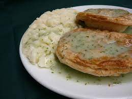

Pie & Mash

Pie and Mash is a traditional East London dish featuring a minced meat pie served with mashed potatoes and a parsley
sauce.
Minced Meat Pie
Ingredients
- 1 lb Mince beef
- 1 medium onion, finely chopped
- 1 tbsp vegetable oil
- 1 tbsp Worcestershire sauce
- 1/2 tsp salt
- 1/4 tsp black pepper
- 1 cup beef stock
- 1 tbsp cornstarch
- 2 pre-made shortcrust pastry sheets
Instructions
- Preheat oven to 375°F (190°C).
- In a large pan, heat the oil and cook the onions until softened.
- Add the minced beef, salt, and pepper to the onions, cooking until the beef is browned.
- Mix cornstarch with a bit of cold water in a small bowl to create a slurry.
- Add the beef stock and Worcestershire sauce to the pan, then stir in the cornstarch slurry. Simmer for a few minutes
until the sauce thickens.
- Roll out the pastry sheets and line the base of a 9-inch pie dish with one sheet, trimming the excess pastry.
- Spoon the beef mixture into the pastry-lined dish.
- Cover the pie with the second pastry sheet, sealing the edges with a fork.
- Make a small hole in the centre of the pie to allow steam to escape, and brush the top with milk or egg wash for a
golden finish.
- Bake the pie for 25-30 minutes or until the pastry is golden and crisp.
Mashed Potatoes
Ingredients
- 2 lbs potatoes, peeled into chunks
- 1/4 cup milk
- 2 tbsp butter
- Salt and pepper
Instructions
- In a large pot, boil the potatoes in salted water until tender (15-20 minutes).
- Drain the potatoes and return them to the pot.
- Add the milk, butter, salt, and pepper, and mash until smooth and creamy.